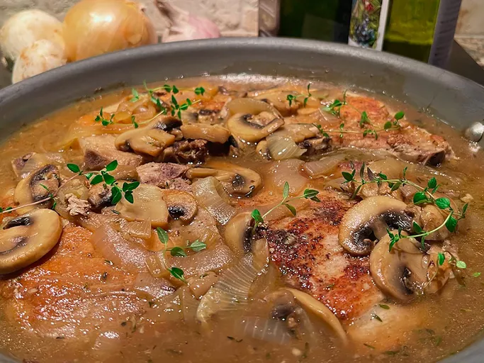

Skillet Pork Chops with Mushroom Gravy

Ingredients
- 4 bone-in pork chops, about 3/4-inch thick
- salt and freshly ground black pepper to taste
- 2 tablespoons olive oil, divided
- 2 tablespoons unsalted butter, divided
- 1 onion, sliced
- 2 cups sliced fresh mushrooms
- 1/2 teaspoon salt, or to taste
- 2 teaspoons minced garlic
- 1 cup chicken stock
- 1/2 cup white wine
- 1/2 teaspoon dried thyme, or to taste
- 1 1/2 tablespoons cornstarch
- fresh thyme sprigs for garnish (optional)
Steps
- Blot chops dry with paper towels and season both sides with salt and pepper.
- Heat 1 tablespoon olive oil and 1 tablespoon butter in a large nonstick skillet over medium-high heat. When butter sizzles, add chops and brown on both sides, 4 to 5 minutes per side. Remove chops from the skillet and keep warm.
- To the same skillet, add remaining olive oil and butter. When butter is melted, add onions, mushrooms, and 1/2 teaspoon salt, and cook, stirring, until onions begin to turn translucent and mushrooms are softened, 4 to 5 minutes.
- Stir in minced garlic and cook until fragrant, about 30 seconds. Add chicken stock, wine, and dried thyme, and bring to a boil.
- Return chops and any accumulated juices to the skillet, nestling chops down into vegetables and broth. Remove about 1/4 cup of broth for later use. Cover, reduce heat to low, and cook until an instant-read thermometer inserted near the center reads 145 degrees F (63 degrees C), 4 to 5 minutes. See note.
- Stir cornstarch into the reserved cooking liquid, and stir until there are no lumps. While stirring the skillet sauce, add cornstarch mixture, and continue stirring 3 to 4 minutes, or until the sauce thickens.
- Serve chops with mushrooms and sauce on top, and garnish with fresh thyme sprigs, if desired.